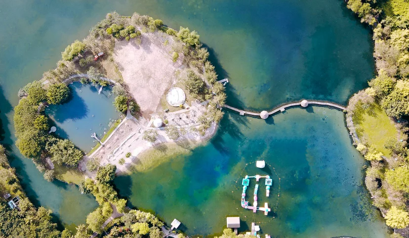

Công viên Suối Mơ có gì thú vị?
Tọa lạc tại số 9, ấp 6, xã Trà Cổ, huyện Tân Phú, tỉnh Đồng Nai, Công viên Suối Mơ được ví như thiên đường “biển trên rừng” với kiến tạo thiên nhiên ấn tượng cùng dòng suối trong vắt, những ngọn thác mát lạnh kết hợp tuyệt mỹ với khu hồ tắm rộng với diện tích lên đến 150.000 m².
Chỉ cách trung tâm thành phố khoảng 100km, được hình thành từ hàng chục dòng suối nhỏ chảy ra từ trong vách núi cùng hội tụ về một vùng trũng toàn đá và cát, tạo nên một hồ nước tự nhiên rất đẹp ở Đồng Nai. Công viên Suối Mơ là một trong những địa điểm du lịch gần Sài Gòn mới thu hút bạn trẻ yêu thích khám phá và cũng là điểm đến được nhiều gia đình lựa chọn nghỉ ngơi, tận hưởng không gian xanh mát vào mỗi dịp cuối tuần, lễ tết. Không khí ở đây vô cùng tươi mát, trong lành, thư giãn trọn vẹn… và hợp ví tiền là những gì bạn sẽ cảm nhận được khi đặt chân đến khu du lịch Suối Mơ.
Điểm nổi bật nhất thu hút đông đảo du khách tìm về công viên Suối Mơ có lẽ là khu suối thác thiên nhiên, nguồn suối thác thiên nhiên với khung cảnh bao quanh trong lành thực sự là không gian lý tưởng cho một chuyến đi với cả gia đình cùng những cuộc vui hội họp nhóm thật sôi động hứa hẹn nhiều thú vị. Từ trên cao ngắm nhìn xuống phong cảnh thiên nhiên vừa đủ đạt đến độ lý tưởng với tầm nhìn từ trên đỉnh thác của Suối Mơ, các bạn có thể ngắm toàn cảnh công viên sinh thái từ trên cao với những ngọn núi nhỏ xung quanh, khung cảnh yên bình và nghe tiếng gió vi vu bên tai thật thú vị.
Với những ai sợ độ cao thì tận hưởng phong cảnh hồ lãng mạn cũng là một ý tưởng tuyệt vời. Một góc yên bình và phù hợp cho những cặp đôi đang yêu cho một chuyến đi chơi vào cuối tuần ngoài suối thác thì tại đây còn có mặt hồ với diện tích rộng hơn 1000 ha trong lành và tươi mát bao quanh bởi những triền cỏ xanh tươi quanh năm, ngắm cảnh hồ và cùng nhau trò chuyện cũng hoặc ngắm các là những trải nghiệm thực sự thú vị mà bạn nên thử khi đến với nơi đây.
Không ngẫu nhiên mà Suối Mơ được biết đến với cái tên “biển trên rừng” của Sài Gòn. Được thiên nhiên ban tặng cho nhiều mạch nước ngầm chảy về nên quanh năm, nước ở đây luôn trong xanh. Đa số các bạn trẻ vô cùng thích thú khi lội xuống dòng suối, chạm đến những viên đá mát lạnh dưới chân… và đây cũng là hồ tắm thiên nhiên duy nhất mà bạn có thể nhìn thấy những viên sỏi dưới chân, ngắm cá bơi lội…

Đặc biệt, ngoài tắm biển ở hồ nước cực lớn thì bạn có thể cùng bạn bè, gia đình tham gia các hoạt động vui chơi như: đạp xe trên nước, cầu tuột, chơi banh nước, chèo thuyền kayak… hay nằm nghỉ ngơi thư giãn tận hưởng không gian tại khu mái chòi…